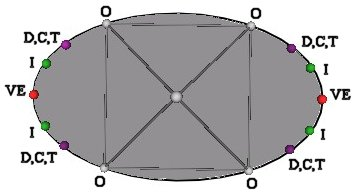
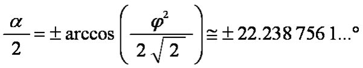
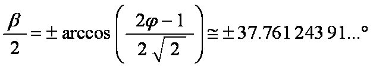
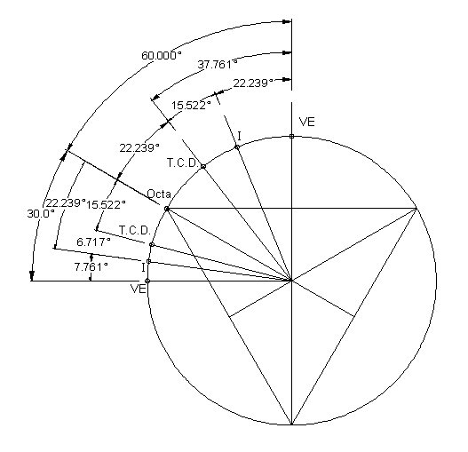

Ellipse = Slice of a Cylinder
The vertices are on the surfaces of 4 intersecting cylinders.
Portion of the ellipse and the polyhedron positions.

By how much is the Jitterbug's triangles rotated for the various polyhedra positions?
VE to Icosahedron
Octahedron to Dodecahedron position

VE to Dodecahedron
Octahedron to Icosahedron position

Summary of Angles

Copyright September, 2007 by Robert W. Gray